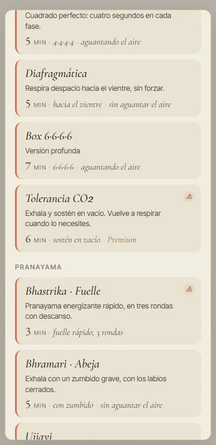
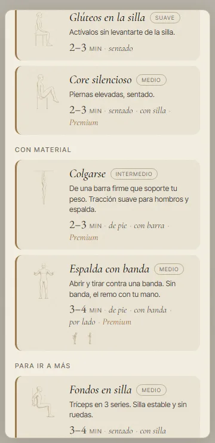
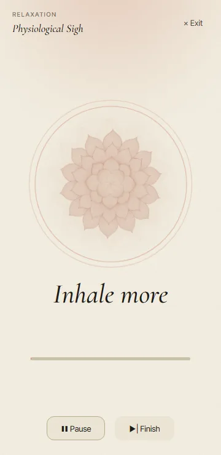
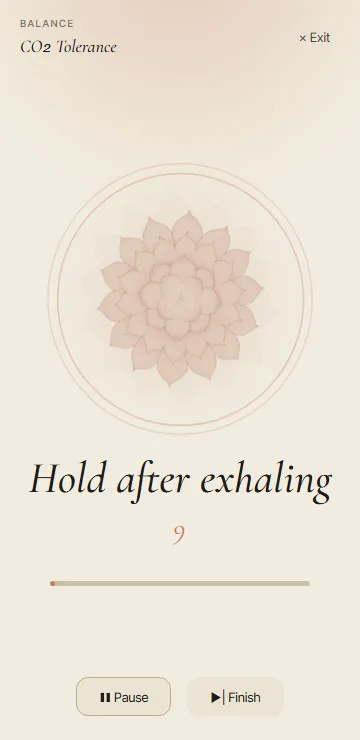
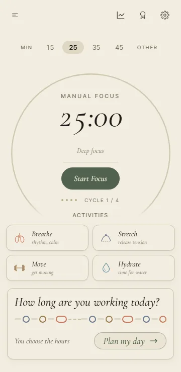
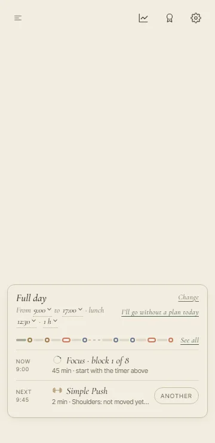
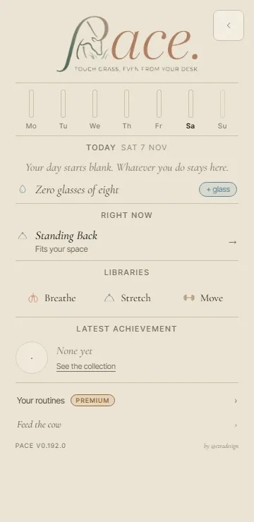
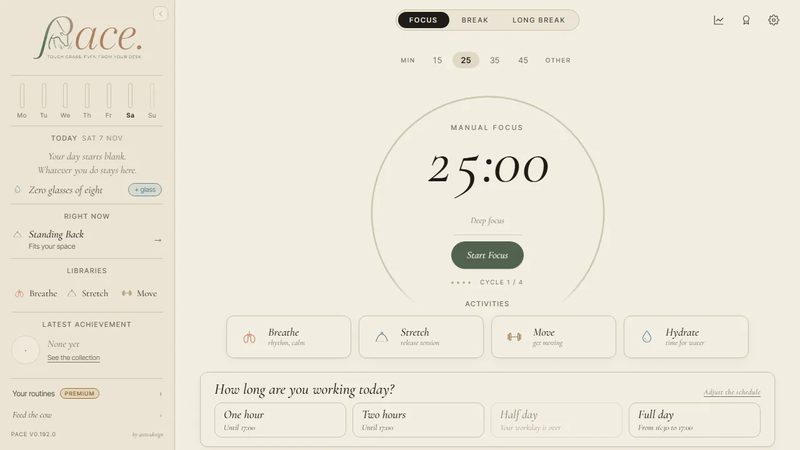

<title>El inglés montado</title>
<meta name="claude:viewport-fit-sides" content="cover">
<link rel="preconnect" href="https://fonts.googleapis.com">
<link rel="stylesheet" href="https://fonts.googleapis.com/css2?family=Cormorant+Garamond:ital,wght@1,500&family=Inter+Tight:wght@400;500;600&display=swap">
<style>
/* Una columna de lectura, como la página de las letras: arriba lo que Ez tiene que mirar (el español
   nuevo, antes y después), debajo las fotos y el resumen del inglés. Colores y letras, los de la app
   (DESIGN_SYSTEM.md). */
:root {
  --paper: #F2EDE0; --paper-2: #EAE4D4; --ink: #1F1C17; --ink-2: #4A453C; --ink-3: #6F695B;
  --line: #D6CDB6; --focus: #3E5A3A; --breathe: #9E4F33; --mark: rgba(62, 90, 58, 0.10);
  --serif: 'Cormorant Garamond', Georgia, 'Times New Roman', serif;
  --sans: 'Inter Tight', system-ui, -apple-system, 'Segoe UI', sans-serif;
}
@media (prefers-color-scheme: dark) { :root:not([data-theme="light"]) {
  --paper: #1d1a14; --paper-2: #26211a; --ink: #EDE5D3; --ink-2: #c0b49e; --ink-3: #B2A995;
  --line: #4d4536; --focus: #98B58B; --breathe: #E8A98F; --mark: rgba(152, 181, 139, 0.14); color-scheme: dark; } }
:root[data-theme="dark"] {
  --paper: #1d1a14; --paper-2: #26211a; --ink: #EDE5D3; --ink-2: #c0b49e; --ink-3: #B2A995;
  --line: #4d4536; --focus: #98B58B; --breathe: #E8A98F; --mark: rgba(152, 181, 139, 0.14); color-scheme: dark; }
* { box-sizing: border-box; }
body { background: var(--paper); color: var(--ink); font-family: var(--sans); font-size: 16px; line-height: 1.55; }
.hoja { max-width: 760px; margin: 0 auto; padding-left: max(16px, env(safe-area-inset-left, 0px)); padding-right: max(16px, env(safe-area-inset-right, 0px)); padding-block: 36px 64px; display: flex; flex-direction: column; gap: 44px; }
h1, h2, h3 { font-family: var(--serif); font-style: italic; font-weight: 500; text-wrap: balance; margin: 0; }
h1 { font-size: clamp(38px, 8vw, 54px); line-height: 1.02; }
h2 { font-size: 29px; line-height: 1.1; }
h3 { font-size: 22px; line-height: 1.15; }
p { margin: 0; max-width: 64ch; color: var(--ink-2); }
b { color: var(--ink); font-weight: 600; }
.eyebrow { font-size: 12px; letter-spacing: 0.14em; text-transform: uppercase; color: var(--ink-3); }
header, section { display: flex; flex-direction: column; gap: 14px; }
.nota { font-size: 14px; color: var(--ink-3); }
.pide { font-family: var(--serif); font-style: italic; font-size: 22px; color: var(--ink); max-width: 40ch; }
/* Antes y después: el antes, tachado y en gris; el después, en tinta; el inglés, debajo y pequeño. */
.cambios { margin: 0; padding: 0; list-style: none; display: flex; flex-direction: column; }
.cambio { display: grid; grid-template-columns: minmax(0, 11rem) minmax(0, 1fr); gap: 4px 18px; padding: 14px 0; border-top: 1px solid var(--line); }
.cambio:last-child { border-bottom: 1px solid var(--line); }
.cambio .donde { font-size: 14px; color: var(--ink-3); padding-top: 2px; }
.cambio .donde b { display: block; color: var(--ink); font-weight: 500; font-size: 15px; }
.cambio .textos { display: flex; flex-direction: column; gap: 4px; min-width: 0; }
.antes { color: var(--ink-3); text-decoration: line-through; text-decoration-color: color-mix(in srgb, var(--breathe) 60%, transparent); }
.despues { color: var(--ink); font-weight: 500; font-size: 17px; }
.en { font-size: 14px; color: var(--ink-2); font-style: italic; }
.tag { font-size: 11px; letter-spacing: 0.1em; text-transform: uppercase; font-weight: 600; color: var(--breathe); margin-right: 6px; font-style: normal; }
@media (max-width: 560px) { .cambio { grid-template-columns: minmax(0, 1fr); } }
/* Fotos: a 360 px de ancho real, dos por fila cuando caben. */
.fotos { display: grid; grid-template-columns: repeat(auto-fill, minmax(220px, 1fr)); gap: 20px 18px; }
figure { margin: 0; display: flex; flex-direction: column; gap: 8px; min-width: 0; }
figure img { width: 100%; max-width: 360px; height: auto; border: 1px solid var(--line); border-radius: 14px; background: var(--paper-2); }
figure.ancha img { max-width: 100%; border-radius: 10px; }
figcaption { font-size: 14px; color: var(--ink-2); max-width: 40ch; }
ul.lista { margin: 0; padding-left: 20px; display: flex; flex-direction: column; gap: 7px; max-width: 64ch; color: var(--ink-2); }
.cifras { display: flex; flex-wrap: wrap; gap: 10px 26px; }
.cifra { display: flex; flex-direction: column; }
.cifra .n { font-family: var(--serif); font-style: italic; font-size: 34px; line-height: 1; color: var(--focus); font-variant-numeric: tabular-nums; }
.cifra .q { font-size: 13px; color: var(--ink-3); }
code { font-family: ui-monospace, 'Cascadia Mono', Consolas, monospace; font-size: 0.86em; background: var(--paper-2); border: 1px solid var(--line); border-radius: 5px; padding: 0 5px; overflow-wrap: anywhere; }
</style>

<main class="hoja">
  <header>
    <span class="eyebrow">PACE · el inglés con tus letras · 7 de noviembre</span>
    <h1>El inglés, montado</h1>
    <p>Está todo puesto en una rama aparte, con las cinco letras que elegiste (1A 2A 3A 4A 5A). Aún no está en la app:
      la coordinadora lo junta cuando me digas que el español nuevo te vale.</p>
    <p class="pide">Lo único que tienes que mirar es el español nuevo de Respira y Mueve, aquí debajo. ¿Te vale?</p>
  </header>

  <section>
    <span class="eyebrow">Lo que miras tú · 1 de 2</span>
    <h2>Respira: lo que se hace, no lo que te pasa</h2>
    <p>Con la 3A, las descripciones que prometían algo al cuerpo ahora dicen cómo es la respiración. Cambian en los dos
      idiomas; debajo de cada una va el inglés.</p>
    <ul class="cambios">
      <li class="cambio"><div class="donde"><b>Energía</b>el subtítulo del grupo</div><div class="textos">
        <span class="antes">Despierta el sistema</span><span class="despues">Respiraciones profundas, en rondas</span>
        <span class="en">Deep breaths, in rounds</span></div></li>
      <li class="cambio"><div class="donde"><b>Equilibrio</b>el subtítulo del grupo</div><div class="textos">
        <span class="antes">Regula el sistema nervioso</span><span class="despues">Ritmo pausado y contado</span>
        <span class="en">A slow, counted rhythm · <span class="tag">y el grupo</span>Equilibrium pasa a Balance</span></div></li>
      <li class="cambio"><div class="donde"><b>Relajación</b>el subtítulo del grupo</div><div class="textos">
        <span class="antes">Baja el ruido mental</span><span class="despues">Exhalaciones largas</span>
        <span class="en">Long exhales</span></div></li>
      <li class="cambio"><div class="donde"><b>Box 4·4·4·4</b></div><div class="textos">
        <span class="antes">Cuadrado perfecto. Calma mental y foco sostenido.</span><span class="despues">Cuadrado perfecto: cuatro segundos en cada fase.</span>
        <span class="en">A perfect square: four seconds for each phase.</span></div></li>
      <li class="cambio"><div class="donde"><b>Diafragmática</b></div><div class="textos">
        <span class="antes">Respira hacia el vientre. La base de todo lo demás.</span><span class="despues">Respira despacio hacia el vientre, sin forzar.</span>
        <span class="en">Breathe slowly into your belly, without straining.</span></div></li>
      <li class="cambio"><div class="donde"><b>Tolerancia CO₂</b>la de la apnea, con su aviso</div><div class="textos">
        <span class="antes">Exhala y sostén en vacío. Entrena la calma con menos aire.</span><span class="despues">Exhala y sostén en vacío. Vuelve a respirar cuando lo necesites.</span>
        <span class="en">Exhale and hold with empty lungs. Breathe in whenever you need to.</span></div></li>
      <li class="cambio"><div class="donde"><b>Rítmica yin</b></div><div class="textos">
        <span class="antes">Ritmo suave con reposo tras exhalar. Quietud que se asienta.</span><span class="despues">Ritmo suave con reposo tras exhalar.</span>
        <span class="en">A gentle rhythm with a rest after each exhale.</span></div></li>
      <li class="cambio"><div class="donde"><b>Bhramari · Abeja</b></div><div class="textos">
        <span class="antes">Exhala con un zumbido grave. La mente se aquieta.</span><span class="despues">Exhala con un zumbido grave, con los labios cerrados.</span>
        <span class="en">Exhale with a low hum, lips closed.</span></div></li>
    </ul>
  </section>

  <section>
    <span class="eyebrow">Lo que miras tú · 2 de 2</span>
    <h2>Mueve: sin «nadie se entera» ni «sin equipo»</h2>
    <p>Con la 4A, lo que no era verdad del todo se dice como es: hay rutinas con banda y con barra, y que nadie lo note
      no se puede prometer.</p>
    <ul class="cambios">
      <li class="cambio"><div class="donde"><b>Mueve</b>el subtítulo de la biblioteca</div><div class="textos">
        <span class="antes">Calistenia y fuerza. Corto, discreto, sin equipo.</span><span class="despues">Calistenia y fuerza. Corto y discreto, casi siempre sin material.</span>
        <span class="en">Calisthenics and strength. Short and discreet, mostly equipment-free.</span></div></li>
      <li class="cambio"><div class="donde"><b>Sigilo</b>el subtítulo del grupo</div><div class="textos">
        <span class="antes">Nadie se entera</span><span class="despues">Movimientos pequeños, en tu mesa</span>
        <span class="en">Small movements at your desk · <span class="tag">y el grupo</span>Stealth pasa a Discreet</span></div></li>
      <li class="cambio"><div class="donde"><b>Gemelos subrepticios</b>el nombre se queda</div><div class="textos">
        <span class="antes">Bajo la mesa, nadie se entera.</span><span class="despues">Bajo la mesa, talones arriba y abajo.</span>
        <span class="en">Under your desk, heels up and down.</span></div></li>
      <li class="cambio"><div class="donde"><b>Glúteos invisibles</b>cambia el nombre</div><div class="textos">
        <span class="antes">Glúteos invisibles · Actívalos sentado. Invisible total.</span><span class="despues">Glúteos en la silla · Actívalos sin levantarte de la silla.</span>
        <span class="en">Seated Glute Squeezes · Work them without leaving your chair.</span></div></li>
    </ul>
    <p class="nota">Las rutinas guardadas y lo que ya hiciste no se pierden: solo cambia lo que se lee.</p>
    <div class="fotos">
      <figure><figcaption>Respira en el móvil, con el grupo Equilibrio.</figcaption></figure>
      <figure><figcaption>Mueve en el móvil, con el grupo Sigilo.</figcaption></figure>
    </div>
  </section>

  <section>
    <span class="eyebrow">En inglés, a 360 px</span>
    <h2>Que los textos nuevos caben</h2>
    <p>Las fotos son de la app en inglés en un móvil de 360 px, que es el más estrecho que miramos, y la barra
      lateral también en el portátil.</p>
    <div class="fotos">
      <figure><figcaption>«Inhale more», como «Inhala más» (antes decía «inhala otra vez»).</figcaption></figure>
      <figure><figcaption>«Hold after exhaling», como «Sostén en vacío».</figcaption></figure>
      <figure><figcaption>«A tu ritmo»: «How long are you working today?» y «No plan today».</figcaption></figure>
      <figure><figcaption>El día servido, con «No plan today» arriba a la derecha.</figcaption></figure>
      <figure><figcaption>La barra en el móvil: «Latest achievement» y «Zero glasses of eight».</figcaption></figure>
    </div>
    <figure class="ancha"><figcaption>La barra en el portátil, a 1280 px.</figcaption></figure>
  </section>

  <section>
    <span class="eyebrow">Lo que cambia en inglés</span>
    <h2>Doscientas ochenta y una frases</h2>
    <div class="cifras">
      <div class="cifra"><span class="n">281</span><span class="q">propuestas de ChatGPT, todas miradas</span></div>
      <div class="cifra"><span class="n">256</span><span class="q">textos de la app</span></div>
      <div class="cifra"><span class="n">42</span><span class="q">cambios en las páginas web</span></div>
    </div>
    <p>Lo que más se ve:</p>
    <ul class="lista">
      <li><b>La bienvenida</b>: «The antidote to sitting.» y «At your pace.», con el botón «Start».</li>
      <li><b>El antídoto</b>, igual en sus seis sitios: «The antidote to sitting», y en Estira «The antidote to desk work» y «The antidote to typing».</li>
      <li><b>Foco</b>: «Start Focus», «Manual Focus», «Pause Focus».</li>
      <li><b>Respira</b>: «Hold after exhaling», «Inhale more», «Breathe gently».</li>
      <li><b>«A tu ritmo»</b>: «How long are you working today?», «Continue with Stretch», «To wind down».</li>
      <li><b>Ajustes</b>: «Appearance», «Sound», «Color theme», «Export a copy». Lo de las copias sigue diciendo «copy», como decidiste el 27 de octubre (nada de «backup» en Ajustes).</li>
      <li><b>La web</b>: «Active breaks for people who work at a desk.», «Coming with version 1», «Email myself».</li>
      <li><b>Inglés de Estados Unidos en todo</b>: color, catalog, center, practice, canceled. Las fechas siguen como «7 November».</li>
      <li><b>Las promesas de lo gratis se quedan</b> («the essentials, always», «And it always will be», «Forever»); solo «the core, no strings attached».</li>
    </ul>
    <h3>Cuatro retoques míos</h3>
    <ul class="lista">
      <li>En la barra, «Zero glasses of eight» y no «0 of eight glasses»: ahí los números van con letra.</li>
      <li>En /premium, «Achievements, your day and your week»: debajo ya pone «stats» y no hacía falta repetirlo.</li>
      <li>Energía dice «Deep breaths, in rounds», que es lo que hacen sus tres rutinas.</li>
      <li>«A tu ritmo»: «No plan today» y «Shoulders: unmoved today», porque lo que proponía ChatGPT no cabía en una línea en el móvil.</li>
    </ul>
    <p class="nota">Las claves no cambian, solo el texto: nadie pierde sus rutinas ni sus datos. La ficha de Google Play no
      estaba en la revisión y sigue como está. El detalle, en <code>docs/audits/chatgpt-7nov-ingles/montado.md</code>.</p>
  </section>
</main>
